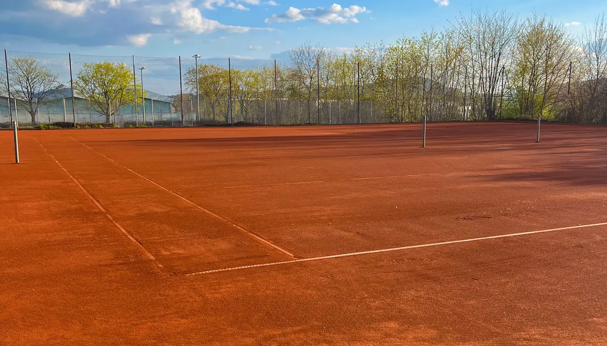
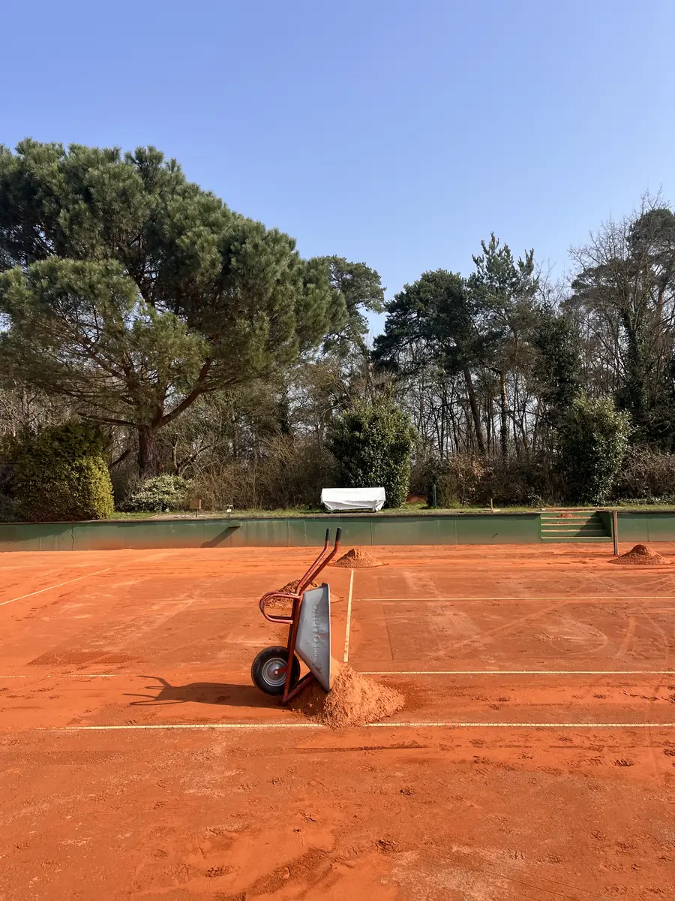
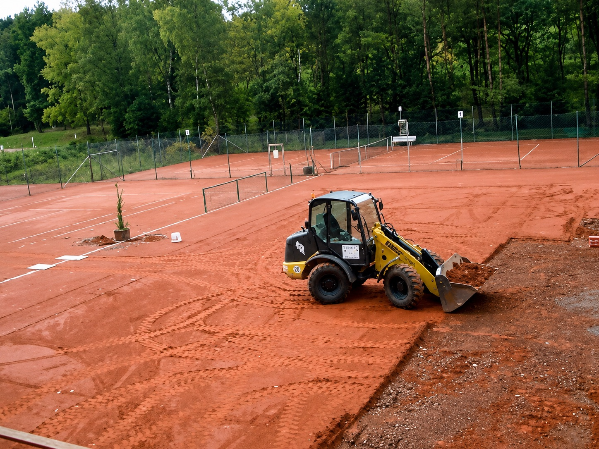
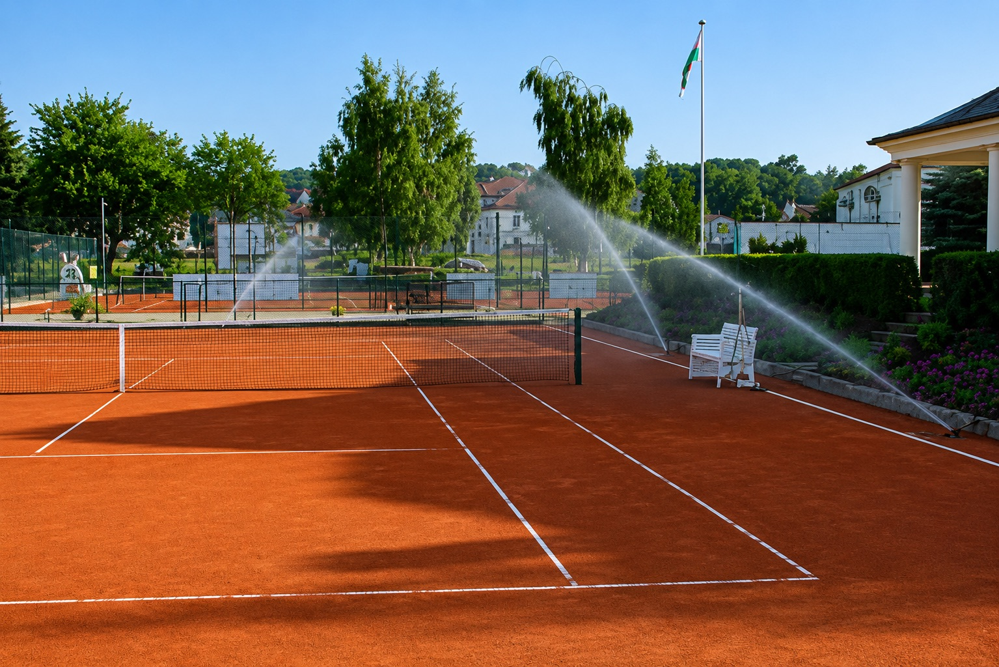
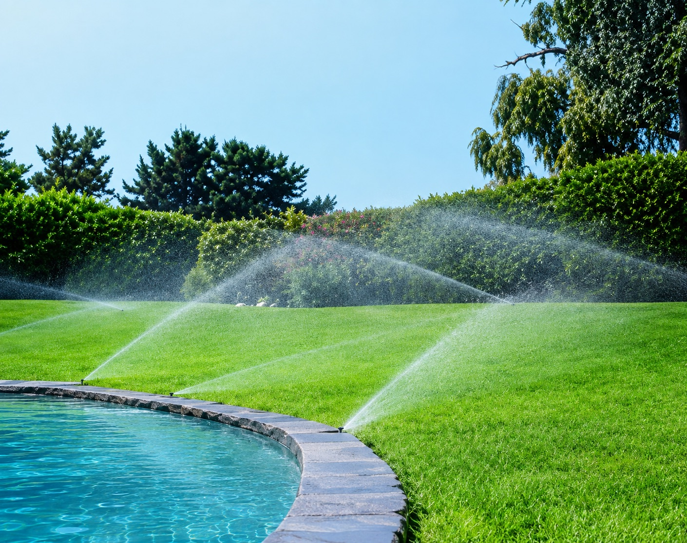
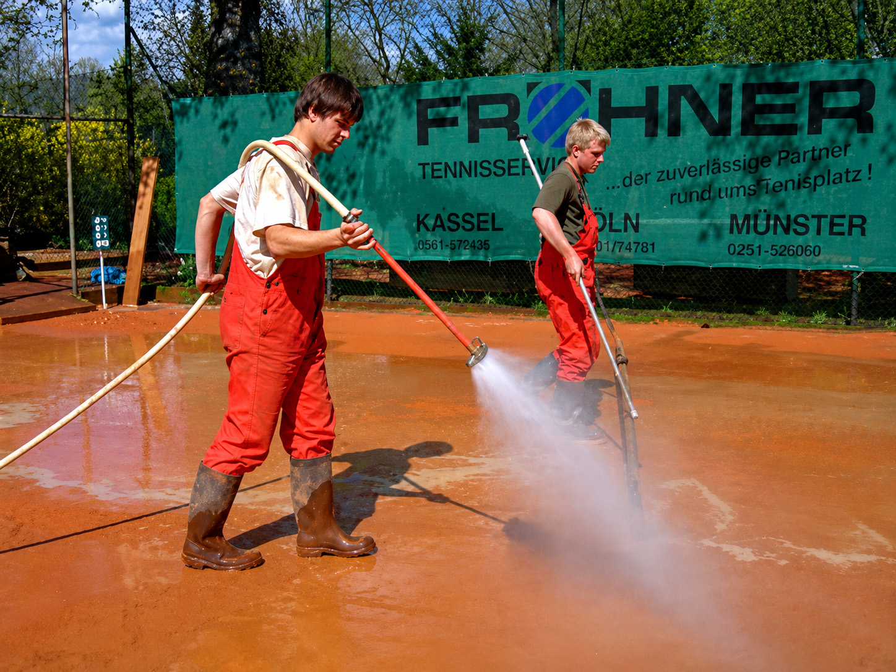
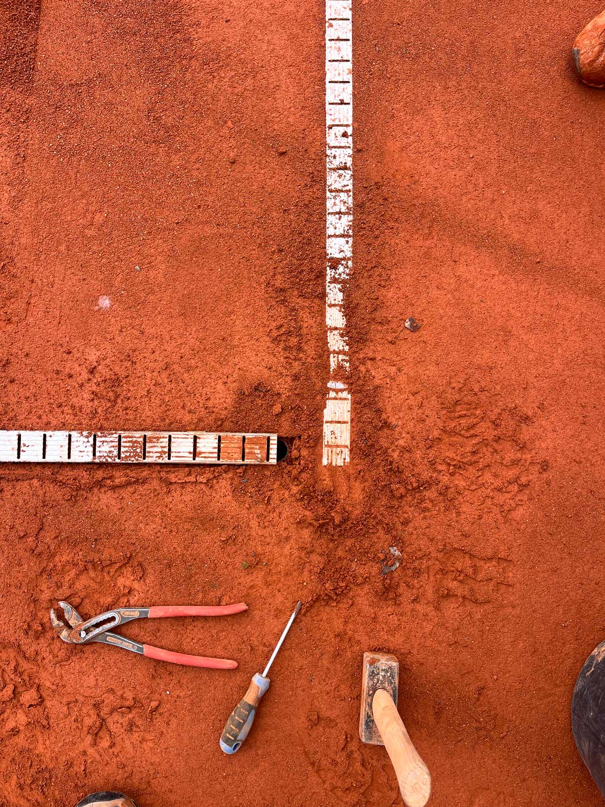
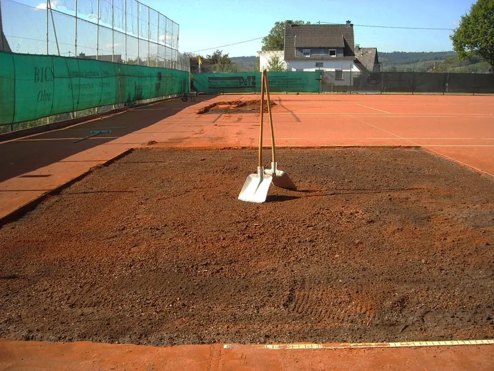

Frühjahrs-
instandsetzung
Abziehen, abfahren, walzen, neu einstreuen und einschlämmen – für einen zuverlässigen Saisonstart.

Tennisservice aus Metelen & Kassel
Wir setzen Tennisplätze instand, überholen ausgespielte Anlagen und bauen automatische Beregnungen – bundesweit und seit fast zwei Jahrzehnten.
Was braucht Ihr Platz?
Ob eine einzelne Frühjahrsinstandsetzung vor Saisonbeginn oder die komplette Grundüberholung einer in die Jahre gekommenen Anlage: Wir beraten Sie gerne und unterbreiten Ihnen ein Angebot, das auf Ihre Anlage abgestimmt ist.
Abziehen, abfahren, walzen, neu einstreuen und einschlämmen – für einen zuverlässigen Saisonstart.
Wenn Wasser stehen bleibt, bauen wir die undurchlässigen Schichten aus und den Platz fachgerecht neu auf.
Bei klar begrenzten Schäden erneuern wir nur die Problemzonen. Der intakte Platzaufbau bleibt bestehen.
Automatische Versenkberegnung für Tennisplätze, Sportanlagen und Grünflächen – leise und wassersparend.
Frühjahr
Jeder Schritt folgt einem festen Firmenstandard. So wird aus einer wintermüden Tenne wieder eine ebene, griffige Spielfläche.
Loses Material, Moos und Laub werden von Hand oder maschinell entfernt.
Der gesamte Abtrag wird vom Platz gekarrt und fachgerecht gesammelt.
Tennenfläche und korrigierte Spielfeldmarkierung werden vollständig eingewalzt.
Rund 2,5 Tonnen Ziegelmehl der Körnung 0/2 mm werden von Hand verteilt.
Mit Spezialhobel und ausreichend Wasser verbinden wir Alt- und Neumaterial.
Nach dem Fein-Abstreuen und Einnetzen ist die Fläche bereit für die weitere Platzpflege.

Fakten für Ihre Planung

Wenn Wasser stehen bleibt
Nach 15 bis 25 Jahren können dynamische Schicht und Drainage ihre Wasserdurchlässigkeit verlieren. Dann reicht oberflächliche Pflege nicht mehr.
Beregnung
Für Sportanlagen und Grünanlagen jeglicher Art: geplant, verlegt und in Betrieb genommen.

Eine moderne, automatische Versenkberegnung ist die wirtschaftlichste und effektivste Art der Bewässerung – gerade in den frühen Morgenstunden, wenn die Verdunstung am geringsten ist.

Automatische Beregnungsanlagen für Grünflächen machen Sie vom natürlichen Niederschlag unabhängig. Auch bei langen Trockenperioden bleibt Ihre Anlage zuverlässig versorgt.
Einblicke
Gut organisiert erfolgen die Arbeiten nach festen Firmen-Standards.



Zwei Standorte
Ob Westfalen oder Hessen: Sie sprechen direkt mit einem Fachbetrieb, der Ihre Platzsituation versteht.
Metelen
Hilbuskamp 40
48629 Metelen
Kassel
Backmeisterweg 18
34131 Kassel
Ihr nächster Schritt
Rufen Sie uns an. Wir klären gemeinsam, welche Arbeiten sinnvoll sind und erstellen ein passendes Angebot.